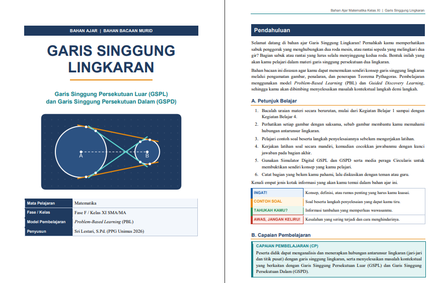
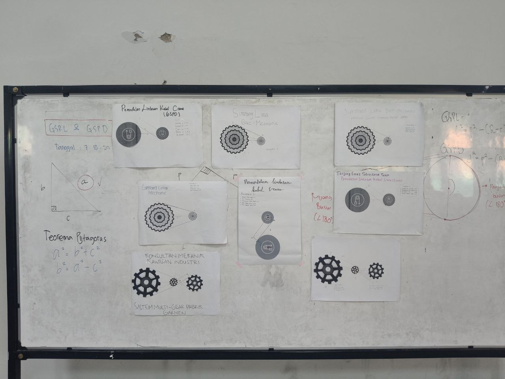
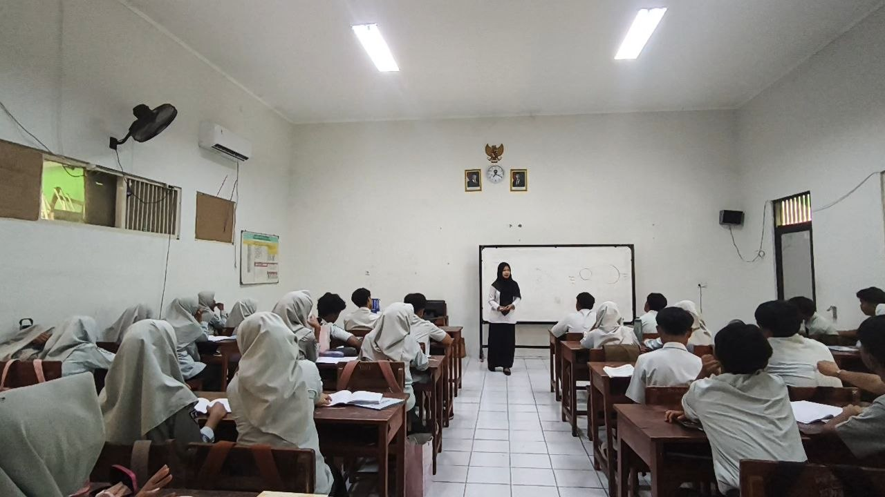
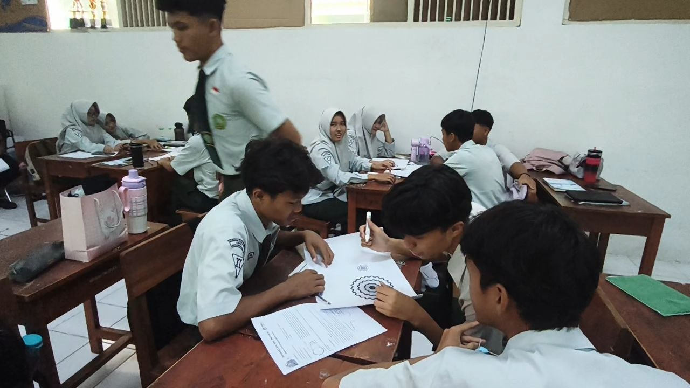
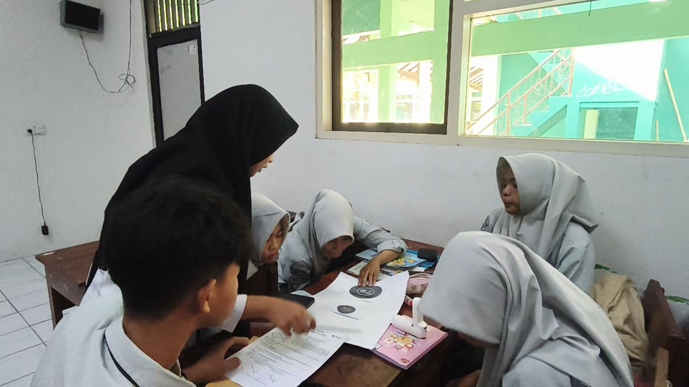
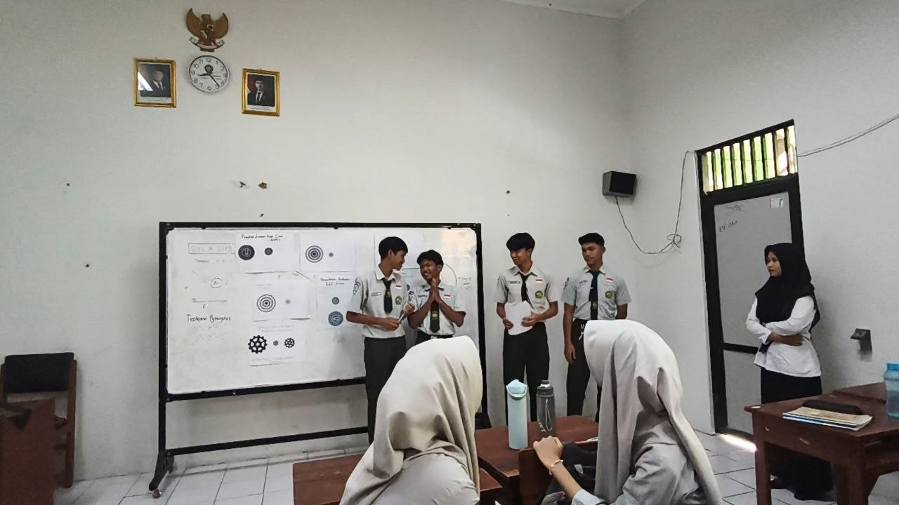

Siklus 3
Penerapan Awal Pembelajaran Matematika
Modul ini berfokus pada materi Garis Singgung Persekutuan Luar (GSPL) dan Garis Singgung Persekutuan Dalam (GSPD) Dua Lingkaran untuk kelas XI (Fase F). Mengintegrasikan model Problem Based Learning (PBL), pendekatan Culturally Responsive Teaching (CRT) berbasis konteks lokal Kota Semarang, serta Teaching at the Right Level (TaRL), modul ini memandu peserta didik mengonstruksi, mengukur, dan menghitung panjang garis singgung persekutuan secara konkret dan terstruktur.

Perencanaan Pembelajaran
Buka DokumenLihat Analisis ▾
Rancangan PBL Terstruktur: Modul dirancang untuk 1 Pertemuan (2 JP x 45 Menit) dengan sintaks PBL yang memosisikan peserta didik sebagai "pemilik usaha sepeda", "teknisi pelabuhan", atau "insinyur pabrik". Pengintegrasian Pedagogi Modern:CRT: Mengangkat masalah kontekstual yang dekat dengan keseharian peserta didik di Semarang (persewaan sepeda tandem Kota Lama/Simpang Lima, crane Pelabuhan Tanjung Emas, dan mesin tekstil Kawasan Industri Candi). TaRL & Diferensiasi: Berdasarkan asesmen diagnostik, peserta didik dikelompokkan secara homogen dan menerima Lembar Kerja Murid (LKM) berjenjang (Tipe A untuk tingkat dasar, Tipe B untuk tingkat sedang, dan Tipe C untuk tingkat tinggi).

Bahan Ajar Guru
Buka Bahan AjarLihat Analisis ▾

Media Pembelajaran
Lihat MediaLihat Analisis ▾
Fungsi Konstruktif & Verifikatif: Lembar Halaman Kerja berfungsi sebagai media eksplorasi geometris, di mana peserta didik menggambar konstruksi lingkaran dan melakukan pengukuran langsung menggunakan jangka dan penggaris. Menghubungkan Konkret ke Abstrak: Penggunaan Halaman Kerja membantu peserta didik menjembatani hasil pengukuran fisik dengan perhitungan aljabar berbasis Teorema Pythagoras, sehingga mengurangi tingkat abstraksi materi GSPL dan GSPD. Aksesibilitas Tinggi: Media berbasis cetak ini memastikan seluruh kelompok dapat melakukan penyelidikan geometris secara merata tanpa terkendala keterbatasan perangkat digital.
Video Pembelajaran
Lihat Analisis ▾
Dinamika Kelompok Homogen (TaRL): Video memperlihatkan efektivitas pembentukan kelompok homogen, di mana setiap kelompok menyelesaikan LKM sesuai dengan tingkat kesiapan belajarnya (Tipe A, B, atau C). Guru berperan sebagai fasilitator yang memberikan bimbingan berjenjang (scaffolding) sesuai kebutuhan tiap kelompok. Penyelidikan Konkret & Kolaboratif: Terlihat interaksi aktif saat peserta didik mengukur jari-jari, jarak pusat, dan garis singgung secara langsung pada Halaman Kerja, lalu membentuk segitiga siku-siku bantu untuk membuktikannya menggunakan Teorema Pythagoras. Pameran Karya Visual: Rekaman mendokumentasikan suasana kelas yang kondusif saat kegiatan gallery walk dan diskusi pleno yang dipandu guru, memfasilitasi pertukaran pemahaman antar-kelompok secara efektif tanpa tekanan presentasi lisan di depan kelas.
Dokumentasi 3




Refleksi & Rencana Tindak Lanjut
Dokumen Refleksi
Keberhasilan: Penggunaan LKM berjenjang (TaRL), pendekatan CRT kontekstual, serta media Halaman Kerja berbasis pengukuran langsung berhasil meningkatkan pemahaman konseptual dan partisipasi aktif peserta didik. Penyajian karya secara visual (gallery walk) juga terbukti efektif menciptakan suasana kelas yang inklusif. Tantangan: Beberapa kelompok membutuhkan waktu lebih lama pada tahap konstruksi segitiga bantu dan pencocokan selisih antara hasil pengukuran dengan hasil perhitungan aljabar.
Buka Refleksi (Google Drive)Rencana Tindak Lanjut
Berdasarkan refleksi Siklus 3, langkah perbaikan yang akan diimplementasikan pada Siklus 2 meliputi:
- Menyediakan lembar petunjuk pembentukan segitiga bantu yang lebih intuitif agar tahap penyelidikan kelompok dapat berjalan lebih efisien.
- Memberikan penekanan eksplisit di papan tulis mengenai alasan matematis mengapa rumus GSPL menggunakan pengurangan jari-jari (R-r), sedangkan GSPD menggunakan penjumlahan jari-jari (R+r).